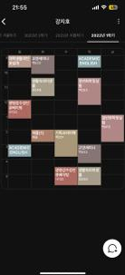

OCR 기술 개요 및 Tesseract의 한계
BFS 블록 분리 및 배경색 기반 전처리
4가지 방법 비교 및 성능 분석
핵심 기여 및 향후 연구 방향
Optical Character Recognition — 이미지에서 텍스트를 추출하는 기술. 문서 디지털화, 자동화 데이터 입력 등 다양한 분야에서 활발히 연구됨.
대표적인 오픈소스 OCR 엔진. 이진화 → 레이아웃 분석 → 문자 인식을 단일 파이프라인으로 처리하며, 일반 문서 환경에서 높은 인식률 보유.
단일 임계값 이진화 과정에서 다양한 배경색이 노이즈로 작용
인접 블록 간 텍스트가 서로 혼재되어 검출 오류 발생
배경색이 문자로 오인식되어 전체 인식 정확도 급감
Tesseract의 레이아웃 분석과 이진화를 외부 전처리 단계로 분리하여 배경색 간섭을 원천 차단
기존 방법에서 Tesseract가 담당하던 레이아웃 분석과 이진화를 외부 전처리로 분리함으로써, Tesseract는 순수하게 문자 인식에만 집중할 수 있도록 역할을 재분배
입력 이미지의 각 픽셀에 대해 밝기(Brightness)와 채도(Saturation)를 기준으로 유채색 픽셀을 판별
너비 우선 탐색(Breadth-First Search) 알고리즘으로 인접한 유채색 픽셀을 하나의 과목 블록으로 묶음
블록 단위 분리로 인접 블록 간 간섭 완전 제거
각 과목 블록이 독립적으로 처리됨
분리된 각 블록은 독립적으로 이진화가 적용되어, 각 블록 고유의 배경색에 최적화된 처리가 가능
BFS 블록 분리 후 Bicubic 보간법으로 2배 업스케일 → 이진화 없이 컬러 이미지를 Tesseract에 전달
유채색 픽셀 기반 BFS 탐색으로 과목 블록을 개별 분리 → 인접 블록 간 간섭 제거
주변 4×4 픽셀을 사용하는 3차 다항식 기반 보간으로 각 블록을 2배 확대
이진화 없이 컬러 이미지 그대로 Tesseract에 전달 → Tesseract 내부에서 Otsu 이진화 수행
이진화를 외부에서 처리하지 않으므로 Tesseract 내부 Otsu 이진화 시 배경색 간섭이 잔존
BFS 블록 분리 후 각 블록의 배경색을 감지하여 이진화 — Tesseract에 문자 인식만 수행
32단위 양자화된 색상 히스토그램에서 순수 흰색·검정 제외 후, 가장 빈도 높은 색을 배경색으로 결정
픽셀과 배경색 간 색상 거리 계산 → 임계값 초과 시 텍스트(검정), 이하 시 배경(흰색)
생성된 이진 블록 이미지를 Tesseract LSTM에 전달 → 문자 인식만 수행 (레이아웃 분석·이진화 제외)
BFS로 분리된 각 블록에 4가지 이진화를 모두 적용 → 한글 인식 수 최다 결과 선택
C_dom 기반 색상 거리 이진화 (Block Background와 동일한 방식)
밝기·채도 기준으로 흰색 텍스트 픽셀 판별
클래스 간 분산을 최대화하는 임계값 t* 결정
밝기 상위 20% 픽셀을 텍스트로 추출 (어두운 배경 대응)
4가지 결과 중 한글 문자 수 최다 결과를 최종 출력으로 선택 → 다양한 배경색·텍스트 조합 완전 대응
⚠ 단점: 블록당 Tesseract 4회 호출 → 처리 시간 약 2.4배 증가 (29분 5초)
전처리 없이 시간표 전체 이미지를 Tesseract에 직접 입력. Tesseract가 Otsu 이진화 → Connected Component → LSTM 인식을 모두 수행.
⚠ 배경색 간섭으로 인식 성능 저하
BFS로 블록 분리 후, Bicubic 보간법으로 2배 업스케일하여 Tesseract에 입력. 이진화 없이 컬러 이미지 그대로 전달.
⚠ Tesseract 내부 이진화 배경색 간섭 잔존
BFS 블록 분리 + 배경색 감지 이진화. 각 블록의 고유 배경색을 제거한 이진 이미지를 Tesseract에 전달하여 문자 인식만 수행.
✓ 성능과 처리 속도의 균형
블록당 4가지 이진화 방법을 모두 적용 후 한글 인식 수 최다 결과 선택. 다양한 시간표 스타일 대응.
✓ 최고 인식률 (단, 처리 시간 증가)
직접 수집한 229개의 대학교 수업 시간표 이미지
총 2,029개 과목 블록 포함

그림 1. 수업 시간표 이미지 (Fig. 1. timetable image)
| 방법 | 총 검출 항목 | 일치율 | 처리 시간 | 평가 |
|---|---|---|---|---|
| 4전략 | 2,029 | 100% | 29분 5초 | 최고 정확도 |
| Block Background | 2,029 | 93.4% | 10분 33초 | 균형 ✓ |
| Bicubic | 2,009 | 77.7% | 11분 13초 | - |
| Original | 1,978 | 69.0% | 11분 54초 | 기준선 |
OCR 엔진에 전처리를 일임하는 것보다, 입력 이미지의 특성에 맞는 전처리를 외부에서 수행하는 것이 인식 성능 향상에 효과적임을 실험으로 입증. 블록 단위 전처리는 전체 이미지 처리 방식 대비 최대 31%p 향상된 일치율을 달성.
컬러 시간표 환경에서 블록 단위 전처리가 전체 이미지를 직접 처리하는 방식보다 높은 인식 성능을 보임을 확인.
배경색 기반 단일 이진화만으로도 처리 시간 부담 없이 유사한 수준의 성능을 얻을 수 있음을 검증.
S. Mori, C. Y. Suen, and K. Yamamoto, "Historical review of OCR research and development," Proc. IEEE, vol. 80, no. 7, pp. 1029–1058, Jul. 1992.
N. Islam, Z. Islam, and N. Talukder, "An efficient optical character recognition system for natural scene images," Proc. Int. Conf. Elect. Comput. Commun. Eng. (ECCE), pp. 1–4, Feb. 2017.
R. Smith, "An overview of the Tesseract OCR engine," Proc. 9th Int. Conf. Doc. Anal. Recognit. (ICDAR), vol. 2, pp. 629–633, Sep. 2007.
J. Sauvola and M. Pietikäinen, "Adaptive document image binarization," Pattern Recognit., vol. 33, no. 2, pp. 225–236, Feb. 2000.